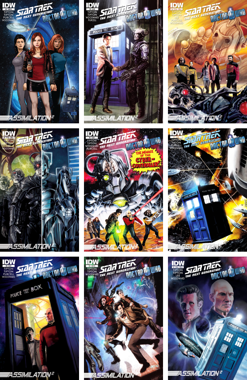

Doctor Who começou a aparecer em comics ainda nos anos 60, e desde então, ganhou cada vez mais espaço nesse mercado. Desde a década de 80, a Doctor Who Magazine lança estórias divididas entre suas edições. E com a volta da série em 2005, a IDW relançou estórias da DWM antigas e as recoloriu e também começou a lançar estórias com os Doctors da série atual. Desde 2009, o Gibiscuits e o Universo Who traduzem as comics e mantém parceria em alguns projetos.
Doctor Who (2009-2010) – Estórias com o 10º Doctor
Doctor Who (2011-) – Estórias com o 11º Doctor
Curtas da Doctor Who Magazine
Doctor Who Classics – 1ª Temporada

DownloadEPUB // PDF (em breve)
Essa é a primeira aparição do 8º Doctor em quadrinhos.
Sinopse: A bordo da nave cargueira Dreadnought,o Oitavo Doctor junta-se a humana Stacy Towsend para enfrentar uma terrível ameaça.
Sinopse: A TARDIS foi arrastada até uma sinistra cidade, que parece vazia, mas na verdade está cheia de Trods, inimigos do 1º Doctor que pretendem infligir a ele e a seus netos uma punição especial.